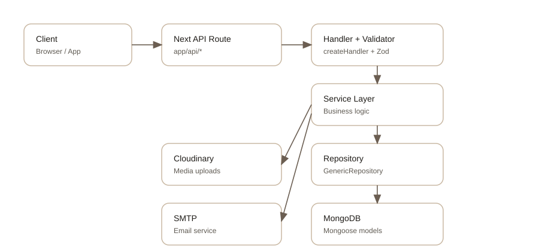

System architecture
How requests move from API routes to MongoDB and external services.
Overview
The backend is built on the Next.js app router. Every route passes through a shared handler, which validates input, resolves a session (if required), calls a service, and returns a standardized response.

Request lifecycle
- API route parses path and query using the route handler.
-
createHandlerchecks session whenrequireAuthis true. -
Request body is parsed and merged via
dataUnifier. - Zod validates the payload using the route validator schema.
- Service executes business logic and returns success or a service error.
-
ResponseHandlerserializes JSON and applies cookies or redirects.
Middleware and routing
Route access control is enforced in next/src/proxy.ts,
which acts as the Next middleware entrypoint. It redirects users
between auth, dashboard, and admin surfaces based on session roles.
Environment configuration
Backend variables are prefixed with BACKEND_ and are
read via envVariable. Public variables (used
client-side) use NEXT_PUBLIC_. See
next/.env.example for defaults.
| Variable | Purpose |
|---|---|
NEXT_PUBLIC_API_BASE_URL |
Client base URL for API requests. |
NEXT_PUBLIC_GOOGLE_OAUTH_CLIENT_ID |
Google OAuth client ID for the browser redirect. |
NEXT_PUBLIC_GOOGLE_OAUTH_REDIRECT_URI |
Redirect URI registered with Google OAuth. |
BACKEND_LOG_LEVEL |
Controls server logging verbosity. |
BACKEND_ENV |
Environment name (dev, staging, prod). |
BACKEND_HTTPS_ENFORCED |
Enables secure cookies when true. |
BACKEND_JWT_SECRET_KEY |
Secret used to sign and verify JWT sessions. |
BACKEND_MONGODB_CONNECTION_URI |
MongoDB connection string. |
BACKEND_SMTP_HOST |
SMTP host (required as empty string if unused). |
BACKEND_SMTP_PORT |
SMTP port (required as empty string if unused). |
BACKEND_SMTP_FROM |
Default from address for email. |
BACKEND_SMTP_USERNAME |
SMTP account username. |
BACKEND_SMTP_PASSWORD |
SMTP account password. |
BACKEND_CLOUDINARY_CLOUD_NAME |
Cloudinary cloud name for media uploads. |
BACKEND_CLOUDINARY_API_KEY |
Cloudinary API key. |
BACKEND_CLOUDINARY_API_SECRET |
Cloudinary API secret for signing uploads. |
BACKEND_GOOGLE_OAUTH_CLIENT_ID |
OAuth client ID used server-side. |
BACKEND_GOOGLE_OAUTH_CLIENT_SECRET |
OAuth client secret used server-side. |
BACKEND_GOOGLE_OAUTH_REDIRECT_URI |
OAuth redirect URI used server-side. |
BACKEND_GOOGLE_OAUTH_SUCCESSFUL_REDIRECT |
Client page to land on after successful OAuth. |